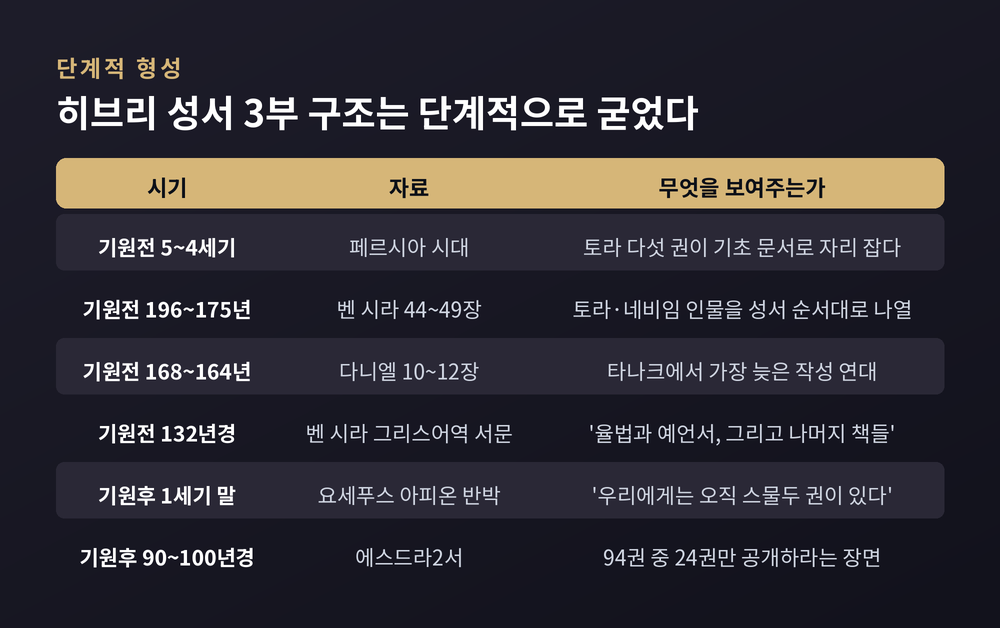
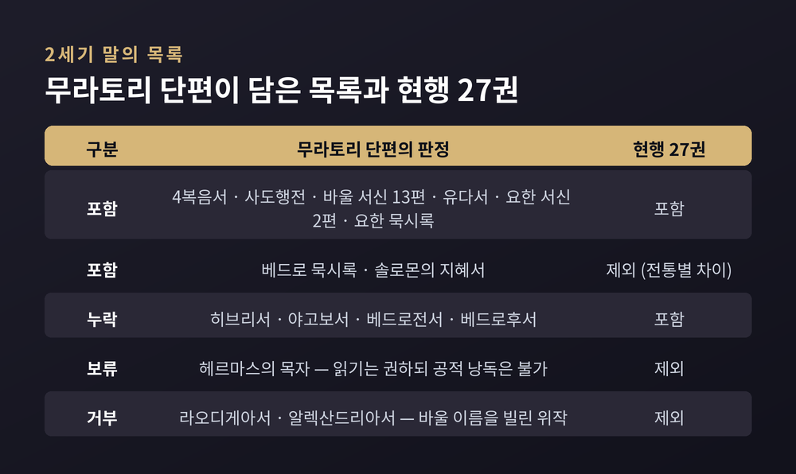
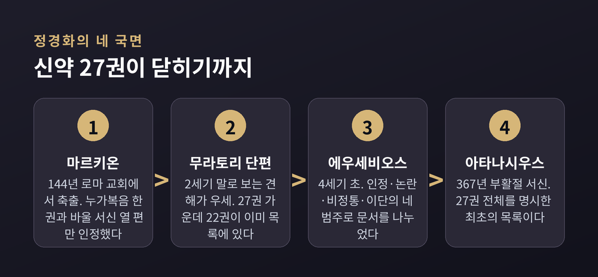
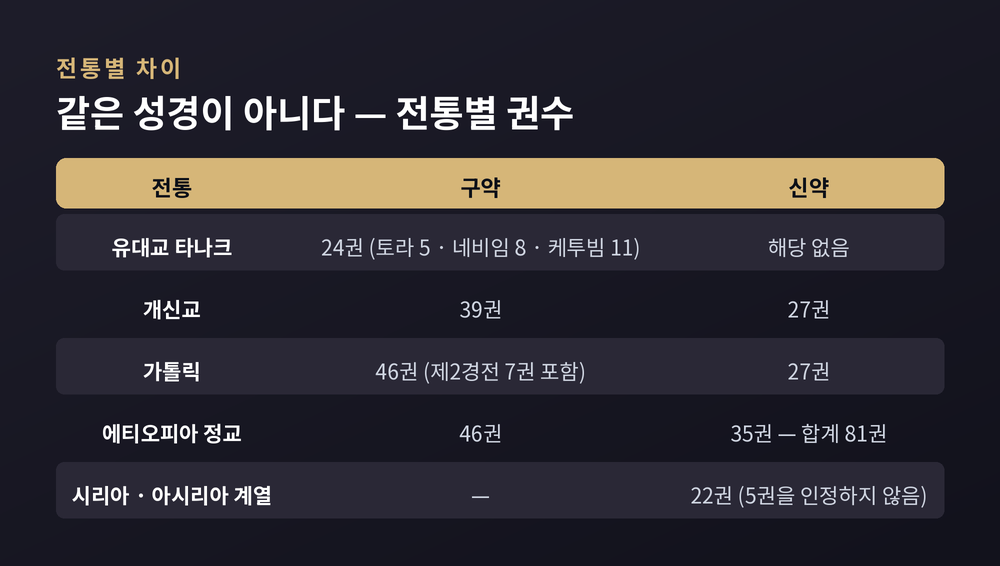
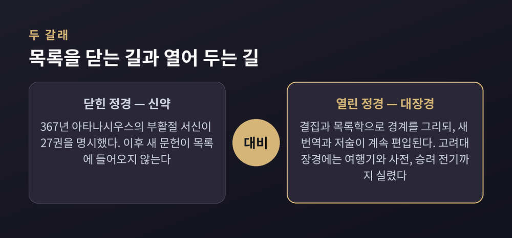
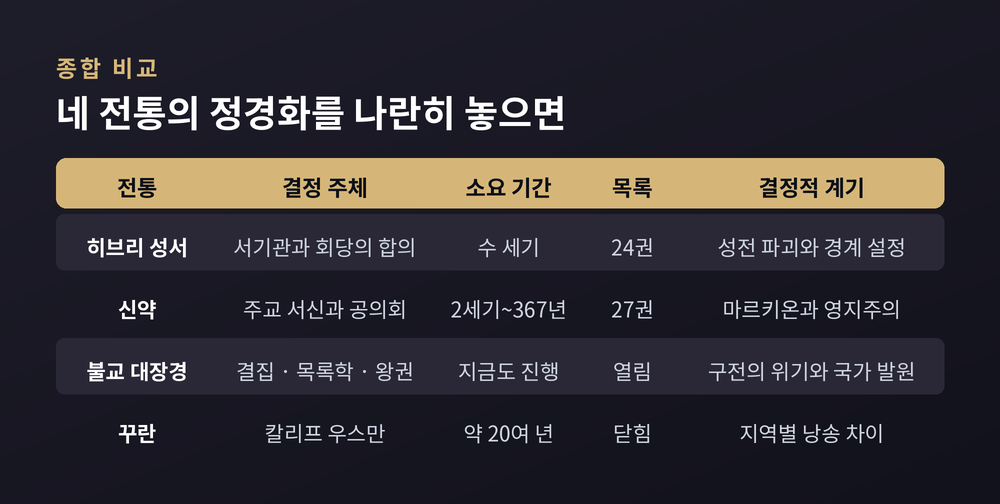

정경화 과정 비교, 유대교·기독교·불교의 경전은 어떻게 확정되었나
kanōn의 어원부터 얌니아 회의설의 재평가, 367년 아타나시우스 서신, 불교 대장경의 열린 정경까지

이번 글에서는 경전이 '경전 목록'이 되어 간 과정을 세 전통에 걸쳐 정리해 보겠습니다. 결론부터 말씀드리면, 어느 전통에서도 한 번의 회의가 목록을 만든 적은 없습니다. 수백 년에 걸친 사용과 논쟁이 먼저 있었고, 목록은 그 뒤를 따라왔습니다.
여기서는 어느 경전이 참된 계시인지 다루지 않습니다. 비교종교학이 이 과정을 어떤 자료로 재구성해 왔는지만 소개합니다. 학계에서 갈리는 대목은 양쪽을 함께 적겠습니다.
'정경'이라는 말부터 4세기의 산물입니다
정경을 뜻하는 그리스어 kanōn은 원래 갈대를 가리켰습니다. 그리스인들은 갈대를 일정 길이로 잘라 자로 썼습니다. 여기서 '측량용 막대', 나아가 '기준'이라는 뜻이 나왔습니다.
이 단어가 문서 목록을 뜻하게 된 것은 4세기부터입니다. 그 이전 세 세기 동안 기독교 저자들에게 kanōn은 신앙의 규범, 진리의 규범을 가리키는 말이었습니다. 바울이 갈라디아서에서 "이 kanōn을 따라 걷는 이들"이라고 썼을 때도 목록이 아니라 규범을 뜻했습니다.
학자들은 그래서 두 개념을 구분합니다. 경전(scripture)은 어떤 글이 권위를 지녔다고 여겨지는 지위입니다. 정경(canon)은 그런 글들의 확정된 목록입니다.
이 구분이 왜 중요한지는 곧 드러납니다. 초기 기독교인들은 여러 글을 경전으로 여기면서도, 수 세기 동안 합의된 정경 목록을 갖고 있지 않았습니다. 브리검영대 종교학연구소에 실린 대니얼 베세라의 정리가 이 점을 짚습니다.
히브리 성서는 한 번에 닫히지 않았습니다
랍비 유대교가 인정하는 타나크는 스물네 권입니다. 토라 다섯 권, 네비임 여덟 권, 케투빔 열한 권으로 나뉩니다.
이 세 묶음이 한꺼번에 정해진 것이 아니라는 단서는 문헌 안에 남아 있습니다.
기원전 196년에서 175년 사이에 쓰인 벤 시라는 44장부터 49장까지 옛 인물들을 성서의 순서 그대로 나열합니다. 그런데 룻기, 아가, 에스더, 다니엘의 인물들은 빠져 있습니다.
더 뚜렷한 흔적은 기원전 132년경 그의 손자가 붙인 그리스어역 서문입니다. 거기에는 "율법과 예언서, 그리고 나머지 책들"이라고 적혀 있습니다. 세 번째 묶음에 아직 케투빔이라는 이름조차 없었다는 뜻입니다.
연대의 하한선도 분명합니다. 다니엘서 10장부터 12장까지는 기원전 168년에서 164년 사이에 작성된 것으로 봅니다. 존 콜린스와 레스터 그래비의 연구가 이 연대를 뒷받침합니다. 타나크에서 가장 늦은 글입니다. 그러므로 정경 확정은 그 뒤일 수밖에 없습니다.
기원후 1세기 말, 요세푸스는 『아피온 반박』에서 "우리에게는 오직 스물두 권이 있다"고 적었습니다. 지금의 스물네 권과 숫자가 다릅니다. 룻기를 사사기에, 애가를 예레미야에 합산했다고 보는 견해가 있고, 당시 아가와 전도서가 아직 정경이 아니었다고 보는 견해도 있습니다. 후자는 2018년 브릴에서 나온 후안 카를로스 오산돈 위도의 연구가 대표적입니다.

얌니아 회의설이 무너진 과정
오랫동안 교과서는 이렇게 설명했습니다. 기원후 90년 무렵 얌니아에 모인 랍비들이 히브리 성서 정경을 확정했다고 말입니다.
이 가설의 출처는 분명합니다. 독일계 유대인 역사가 하인리히 그레츠가 1871년에 내린 결론입니다. 그는 미슈나 야다임 3장 5절에 나오는 아가·전도서 논쟁 같은 대목들을 근거로 삼았습니다. 이 견해는 20세기 대부분 동안 지배적 통설이었습니다.
반론은 천천히, 그러나 차곡차곡 쌓였습니다.
1925년 W. M. 크리스티가 『신학연구지』에서 처음 이의를 제기했습니다. 1964년 잭 P. 루이스가 본격적인 비판 논문을 썼고, 레이먼드 브라운이 이를 대체로 지지했습니다. 1976년 시드 Z. 라이먼은 결정적인 지적을 내놓습니다. 이 가설을 뒷받침한다는 자료들 가운데 정경에서 철회된 책을 언급한 것은 하나도 없다는 것이었습니다. 그는 그 논쟁들이 애초에 정경성에 관한 것이었는지부터 의심했습니다.
오늘날 이 이론은 전문 연구에서 대체로 신빙성을 잃은 것으로 평가됩니다.
다만 한 가지는 솔직히 적어 두겠습니다. 대중 백과사전에는 이 설명이 아직 남아 있습니다. 브리태니커의 '얌니아 회의' 항목은 2026년 6월 갱신본에서도 이 회합이 정경을 확정한 것으로 여겨진다고 서술합니다. 예전엔 이 설명이 학계 정설이었습니다. 지금은 전문 문헌과 대중 백과 사이에 시차가 남아 있는 상태입니다.
그렇다면 확정 시기는 언제일까요. 여기에도 합의가 없습니다. 필립 R. 데이비스는 하스몬 왕조기, 곧 기원전 140년에서 40년 사이의 성취였을 것이라고 봅니다. 반대로 제이컵 뉴스너는 2세기 랍비 유대교에서 성서 정경이라는 관념 자체가 두드러지지 않았다고 주장했습니다.
쿰란에서 나온 사해문서는 이 그림을 한 번 더 흔들었습니다. 노트르담대의 유진 울리히는 초기 수 세기의 본문이 고정된 단일 대상이 아니라 다형적으로 발전하는 실체였다고 정리합니다.
신약은 목록이 아니라 '묶음'에서 시작했습니다
신약 스물일곱 권의 형성도 낱권을 하나씩 모은 과정이 아니었습니다. 작은 묶음 셋에 독립 문서 둘이 붙은 구조로 보는 편이 실상에 가깝습니다.
가장 먼저 묶인 것은 바울 서신입니다. 2세기 초에 이미 함께 읽혔다는 증거가 있습니다. 처음에는 열 편이었고, 2세기 말이면 열세 편 묶음이 일반적이 됩니다.
4복음서가 하나로 묶인 증거는 2세기 말에 나타납니다. 기원후 180년경 이레나이우스가 복음서는 넷보다 많을 수도 적을 수도 없다고 논증한 대목이 최초입니다.
공동서신 일곱 편은 3세기에야 함께 읽히기 시작합니다. 초기에는 요한1서와 베드로전서만 널리 쓰였습니다.
사도행전과 요한계시록은 각자의 길을 걸었습니다. 요한계시록은 서방에서 먼저 받아들여졌고, 동방의 수용은 4세기 말에야 이루어졌습니다.
마르키온이 남긴 자극, 무라토리 단편이 남긴 증거
2세기 중반 로마에 마르키온이라는 부유한 선주가 살았습니다. 그는 구약의 신과 복음서의 신이 같을 수 없다고 보았고, 자기 기준으로 편집한 문서 모음을 만들었습니다. 누가복음 한 권과 바울 서신 열 편이 전부였습니다.
기원후 144년, 그는 로마 교회에서 축출됩니다. 교회는 그가 낸 거액의 헌금까지 돌려주었습니다.
학자들은 이를 "검증 가능한 최초의 신약 정경 — 결국 거부되었지만"이라고 부릅니다. 역설적인 자리입니다. 거부된 목록이 목록을 만들게 했으니까요.
무라토리 단편은 그 반작용의 흔적입니다. 라틴어 여든다섯 줄짜리 문서로, 1740년 루도비코 무라토리가 밀라노 암브로시아나 도서관에서 발견해 출판했습니다. 앞부분이 떨어져 나갔고 끝은 갑자기 끊깁니다.
연대는 갈립니다. 브루스 메츠거, 에버렛 퍼거슨, 에크하르트 슈나벨은 2세기 말로 봅니다. 저자가 로마 주교 피우스 1세를 '최근'이라 부른 점, 마르키온과 영지주의를 겨냥한 관심사가 근거입니다. 반면 1973년 앨버트 선드버그는 4세기설을 제기했고, 1992년 제프리 한네만이 이를 발전시켰습니다. 2022년 클레어 로스차일드는 후대 위작 가능성까지 제기했으나, 2019년 크리스토프 기냐르의 반박이 뒤따랐습니다. 현재 판세는 2세기설이 우세합니다.
내용이 흥미롭습니다. 이 목록에는 지금의 정경에 없는 두 권, 곧 베드로 묵시록과 솔로몬의 지혜서가 들어 있습니다. 반대로 히브리서, 야고보서, 베드로전·후서는 빠져 있습니다. 헤르마스의 목자는 "읽기는 권하되 공적 낭독은 안 된다"는 어중간한 자리에 놓입니다.

367년, 스물일곱 권이 처음으로 함께 호명됩니다
4세기 초 에우세비오스는 문서를 네 범주로 나눴습니다. 무조건 인정되는 스물한 권, 논란 중이지만 널리 쓰이는 책들, 비정통으로 분류한 책들, 그리고 완전히 배격할 이단서들입니다. 정경의 경계가 아직 진행형이었다는 증거입니다.
경계를 명시한 최초의 문서는 기원후 367년 부활절에 나왔습니다. 알렉산드리아 주교 아타나시우스가 보낸 제39차 축제 서신입니다. 지금의 스물일곱 권 전체를 배타적 권위로 명시한 첫 목록이었습니다. 그는 이 책들을 "구원의 샘"이라 불렀습니다.
이 목록은 393년 히포 회의와 397년 카르타고 공의회에서 비준됩니다. 다만 카르타고의 결의는 로마 교좌의 추인을 전제로 한 것이었고, 전 기독교권이 실제로 이 목록에 수렴하기까지는 몇 세기가 더 걸렸습니다.
판정 기준은 대체로 셋이었습니다. 사도가 썼거나 사도와 가까운가(사도성), 신앙의 규범과 어긋나지 않는가(정통성), 주요 도시 교회들이 실제로 계속 써 왔는가(광범위한 사용)입니다.
세 번째 기준이 특히 눈길을 끕니다. 정경화는 권위를 새로 부여한 절차라기보다, 이미 권위를 지니고 있던 글을 뒤늦게 확인한 절차에 가까웠다는 뜻이기 때문입니다.
바깥의 압력도 작용했습니다. 303년 디오클레티아누스의 대박해 때 모든 기독교 문서를 압수·소각하라는 명령이 내려졌습니다. 성직자들은 무엇을 내주고 무엇을 숨길지 그 자리에서 결정해야 했습니다. 몇십 년 뒤 콘스탄티누스는 새 수도의 교회들을 위해 호화 사본 쉰 부를 제작하라고 명합니다. 4세기에 이미 무엇이 중요한지가 상당 부분 정리돼 있었음을 짐작하게 합니다.

지금도 '같은 성경'은 아닙니다
정경이 닫혔다는 말은 단일한 책이 생겼다는 뜻이 아닙니다.
초기 기독교인들이 읽은 구약은 그리스어 번역본인 칠십인역이었고, 여기에는 제2경전 일곱 권이 포함돼 있었습니다. 히에로니무스는 이 책들에 유보적이었지만 불가타에는 모두 실었습니다.
1546년 트리엔트 공의회는 제2경전의 지위를 확정합니다. 흔히 이때 가톨릭이 일곱 권을 '추가'했다고들 하는데요, 역사가들은 기존 정경의 재확인으로 봅니다. 다만 공의회 투표 기록에는 히에로니무스의 유보를 둘러싼 이견이 남아 있었다는 점도 함께 지적됩니다.
종교개혁 진영은 더 짧은 히브리어 성서가 더 오래되었으므로 더 권위 있다는 근거로 외경을 제외했습니다. 그래서 개신교 구약은 서른아홉 권, 가톨릭 구약은 마흔여섯 권입니다.
에티오피아 정교 테와히도 교회는 폭이 훨씬 넓습니다. 구약 마흔여섯 권에 신약 서른다섯 권을 더해 여든한 권입니다. 신약에 헤르마스의 목자와 클레멘스 서신 두 편, 『사도 헌장』이 들어갑니다. 지리적 고립 덕분에 라틴 서방의 축소 논쟁을 거치지 않은 결과로 설명됩니다.
반대 방향도 있습니다. 시리아 정교회와 칼데아 시리아 교회는 베드로후서, 요한2·3서, 유다서, 요한계시록을 인정하지 않습니다. 동방 아시리아 교회도 같은 다섯 권을 뺍니다.

기술이 목록을 바꿉니다 — 두루마리에서 코덱스로
정경 이야기에서 자주 빠지는 것이 재료와 형식입니다.
1세기 말 이전 기독교인들은 파피루스 두루마리에 글을 옮겼습니다. 양피지도 쓰였지만 값이 비쌌습니다. 단일 두루마리의 실용적 한계는 대략 30피트였고, 메츠거의 계산으로는 누가복음과 사도행전 정도 분량이었습니다. 이 추산에는 반론도 있습니다. 데이비드 브랙은 둘을 한 두루마리에 붙이는 것이 현실적이지 않았을 것이라고 봅니다.
눈에 띄는 사실이 하나 있습니다. 초기 몇 세기에 알려진 기독교 파피루스는 대다수가 코덱스인 반면, 같은 시기 비기독교 문헌은 거의 전부 두루마리입니다. 세속 문헌에서 코덱스가 두루마리를 밀어낸 것은 5세기에 이르러서야 완료됩니다. 기독교 쪽의 전환만 유독 빠르고 전면적이었습니다.
이유를 두고 견해가 갈립니다. C. H. 로버츠와 T. C. 스키트는 경제성이나 편의성 같은 실용적 이점이 결정적이지 않았다고 보았습니다. 반면 스키트와 그레이엄 스탠턴은 4복음서 정경과 연결합니다. 네 복음서를 한 두루마리에 담으려면 길이가 30미터에 달해야 했고, 한 권에 넣을 수 있는 형식은 코덱스뿐이었다는 것입니다.
어느 쪽이 맞든 결과는 같습니다. "무엇을 한 권에 묶을 것인가"라는 물음이 "무엇이 정경인가"라는 물음과 겹쳐 버렸습니다.
불교는 왜 목록을 닫지 않았을까요
불교의 출발도 구전이었습니다.
붓다의 입멸 직후, 기원전 480년경 라자가하에 오백 명의 제자가 모였습니다. 마하카샤파가 주재했고 아자타샤트루 왕이 후원했습니다. 아난다가 경을 암송하고 우팔리가 율을 암송했다고 전합니다. 제1차 결집입니다.
'삼장'이라는 말은 글자 그대로 세 바구니입니다. 율장, 경장, 논장이지요. 논장까지 포함한 팔리 삼장 전체가 최종 형태로 채택된 것은 기원전 250년경 제3차 결집에서였다고 전승은 말합니다.
문자로 옮겨진 시점은 기원전 29년입니다. 스리랑카 알로카 레나, 오늘날의 알루위하라 석굴에서 패엽에 새겨졌습니다. 왓타가마니 아바야 왕 때의 일입니다.
동기가 인상적입니다. 순수한 보존 욕구만이 아니었습니다. 기근과 전쟁, 그리고 새로 세워진 아바야기리 승원의 세력 확대가 가한 압박이 기록을 재촉했습니다. 공동체의 경계가 흔들릴 때 문자가 요청된 셈입니다.
그런데 문자화 이후에도 구전은 끝나지 않았습니다. 암송을 전담한 바나카 전통은 이후 여러 세기 동안 문자 경전과 나란히 존속했습니다. 참고로 알루위하라의 원본 필사본 자체는 현존하지 않습니다.
대승 경전은 또 다른 문제를 낳습니다. 현대 학계는 대승 경전을 역사적 붓다의 직설로 보기는 어렵다고 정리합니다. 다만 보살의 윤리나 공 사상은 가장 이른 자료에도 나타나므로 연결성이 약하지 않다는 반론도 있습니다. 대승 경전은 기원전 1세기에서 기원후 1세기 사이에 등장해, 인도 불교가 쇠퇴할 때까지 계속 쓰이고 편집되었다고 봅니다.
여기서 기독교와 결정적으로 갈립니다. 기독교 정경이 목록을 닫는 방향으로 갔다면, 불교 대장경은 새 문헌이 계속 들어올 수 있는 열린 총서로 남았습니다.

공의회 대신 목록학, 그리고 국가
중국에서 정경의 경계를 그은 것은 공의회가 아니었습니다. 목록이었습니다.
양나라 승우가 515년경 완성한 『출삼장기집』은 현존하는 가장 오래된 중국 불전 목록입니다. 텍스트와 교리의 성격에 따른 정밀한 분류를 도입해 이후 목록학의 표준이 되었습니다. 597년에는 비장방의 『역대삼보기』가 나옵니다.
결정판은 730년 지승이 완성한 『개원석교록』입니다. 앞선 목록들의 누락과 오류를 바로잡은 이 책의 편제가 한역 대장경의 기본 구조가 되었습니다. 동아시아 불교 출판사에서 단일 목록으로는 가장 중요한 것으로 평가됩니다.
티베트도 비슷한 길을 걸었습니다. 1268년 촘댄 릭페 랠디가 나르탕 사원에서 번역 불전을 전수 조사해 목록화했고, 그의 제자들이 논서만 따로 정리했습니다. 이 분리가 붓다의 말씀(칸규르)과 논서(텐규르)의 구분으로 굳었습니다. 부퇸 린첸 둡이 샬루 사원에서 편찬한 칸규르가 그 흐름 위에 있습니다.
한국의 팔만대장경은 여기에 국가와 위기라는 변수를 보탭니다.
초조대장경은 1011년 거란과의 전쟁 중에 착수되어 1087년에 완성되었습니다. 북송 개보대장경을 저본으로 삼되 거란대장경 등을 대조해 교감했습니다. 그러나 1232년 몽골 침입 때 목판이 불탔습니다.
재조 작업은 1237년 시작되어 12년에 걸쳐 끝났습니다. 강화도로 천도한 최씨 정권이 대장도감을 설치했고, 선종과 교종 승려가 함께 참여했습니다. 목판을 새기는 행위 자체가 붓다의 가호를 청하는 방법으로 여겨졌습니다. 로버트 버스웰은 이 사업의 자원 투입 규모를 1960년대 아폴로 계획에 비유하기도 했습니다.
규모는 이렇습니다. 목판 8만 1천여 판, 1,496종, 6,568권, 총 5,233만여 자. 목판 한 판에 23행씩 양면 644자가 새겨졌습니다. 남해의 자작나무를 3년간 바닷물에 담그고, 소금물에 삶고, 그늘에서 3년간 말린 뒤에야 칼을 댔습니다. 1398년 해인사로 옮겨져 지금에 이릅니다.
한 가지는 바로잡아 두는 편이 좋겠습니다. "오자가 하나도 없다"는 말은 널리 퍼진 통념입니다. 실제 조사에서는 결자와 오류가 확인됩니다. 완성 당시 교정을 총괄한 수기 국사도 여러 판본을 대조하며 찾아낸 오류와 중복, 누락을 『교정별록』 30권에 따로 기록해 두었습니다.
목판 수도 자료마다 81,352판과 81,258판이 함께 쓰입니다. 집계 기준의 차이입니다.
로버트 버스웰은 2013년, 영어 명칭을 'Korean Buddhist Canon'으로 바꾸자고 제안했습니다. 여행기와 사전, 승려 전기까지 담고 있어 좁은 의미의 삼장보다 범위가 훨씬 넓기 때문입니다. 대장경이 애초에 열린 총서였다는 사실을 이름이 가리고 있다는 지적입니다.
꾸란 — 스무 해 남짓의 표준화
대비를 위해 한 사례만 더 보겠습니다.
초대 칼리프 아부 바크르는 예언자의 서기였던 자이드 이븐 사비트에게 수집을 맡겼습니다. 전승에 따르면 자이드는 대추야자 껍질, 양피지, 얇은 흰 돌, 그리고 사람들의 기억에서 자료를 모았습니다. 절차는 엄격했습니다. 증인 두 사람이 없으면 한 구절도 적지 않았고, 자신이 이미 암기한 구절이라도 기억만으로 옮기지 않았습니다.
650년에서 656년 사이, 제3대 칼리프 우스만이 본문을 확정합니다. 예언자의 부인 하프사가 보관하던 사본을 넘겨받아 작업했고, 동일한 사본을 각 지방에 보내 필사의 표준으로 삼게 했습니다.
이 본문이 절대적으로 균일했는지에 대해서는 사본학적 논의가 이어집니다. 1972년 사나 대모스크 보수 중 발견되어 1981년 팔림프세스트로 확인된 사나 사본이 대표적입니다. 7세기로 연대 측정되는 하층 본문은 개별 단어와 구절에서 표준본과 차이를 보이며, 우스만 본문 유형이 아닌 것으로 알려진 유일한 현존 사본입니다.
여기서 주목할 점은 속도입니다. 유대교와 기독교가 수백 년을 들인 일을, 이 경우에는 스무 해 남짓에 중앙집권적 결정으로 마쳤습니다.

정리하면 이렇습니다.
네 전통의 경로는 전혀 다릅니다. 히브리 성서는 회의 없이 서서히 굳었고, 신약은 한 통의 부활절 서신을 계기로 닫혔습니다. 불교는 끝내 닫지 않았고, 꾸란은 한 세대 안에 표준을 만들었습니다.
그런데 겹치는 것도 있습니다. 어느 경우에도 목록이 먼저 있지 않았습니다. 읽히는 글이 먼저 있었고, 공동체의 경계가 흔들릴 때 비로소 목록이 요청되었습니다. 마르키온이 그랬고, 기근과 전쟁이 그랬고, 몽골의 말발굽이 그랬습니다.
물론 이 정리에는 한계가 있습니다. 여기 적은 연대 대부분은 학계에서 여전히 논쟁 중입니다. 얌니아처럼 한 세기를 버틴 통설이 무너지는 일도 실제로 일어났습니다. 확정된 이야기가 아니라 지금까지의 재구성이라고 읽어 주시면 좋겠습니다.
"경전은 목록이 되기 전에 먼저 쓰였다." 이 순서 하나만 기억해 두셔도 충분하다고 생각합니다.
그러면 정경화는 끝난 일일까요. 적어도 대장경의 이름을 두고 벌어지는 논의를 보면, 무엇을 한 묶음으로 부를지의 질문은 아직 닫히지 않은 듯합니다.